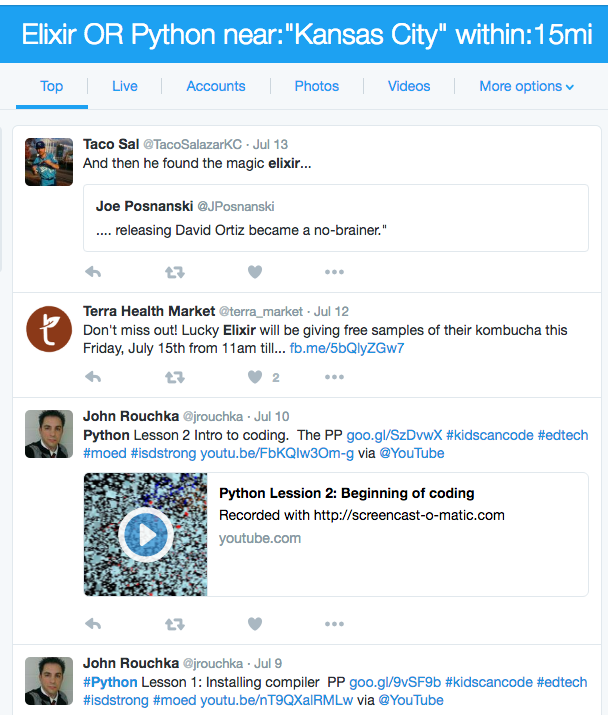
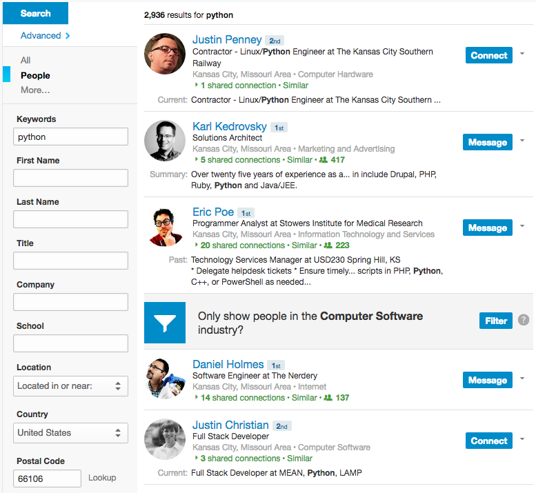
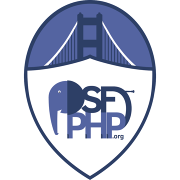
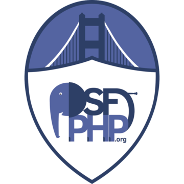
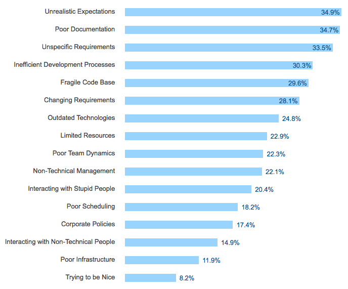

Starting and Sustaining a User Group
John Kary • @johnkary
User Group
Meetup
Community
Community
- Professional ~ hobbyist ~ non-technical
- Sounding Board
- Support Group
Finding a Community
If you can't find a local user group...
Congratulations!
You are its new organizer!
Cal Evans
Why take on leadership?
- Personal Fame!
- Idol Worship!!
- $$$$$$
Why take on leadership?
- Recognition
- Amplify your local community
- Friendship
- The Feels
Just Start!
The First Meeting
Presence
- Word of mouth
- Meetup.com
- 3 organizers / 50 members / $10 per month
- Unlimited / $15 per month
- Twitter Account
- Slack / IRC Channel
Venue
- Quiet-ish
- Small tables and chairs for laptops
- Easy access for parking / transit
- Day of the week?
- Time?
First Meeting - Venue
- Coffee Shop
- Co-Working Office
- Restaurants
- Libraries
Initial Recruitment
twitter.com/search-advanced
Initial Recruitment
www.linkedin.com/vsearch/p
Initial Recruitment
Hey Leslie!
A few other Kansas City developers and me are starting a new discussion and learning group focusing on DockIt. Some of us have been using it at work while others haven't dug in yet. We thought why not get together, caffeinate and talk shop?
Our unofficial first meetup is a casual discussion over coffee at Black Dog Coffeehouse on Saturday, 2-4pm. Wall flowers welcome! If you're interested we'd love to meet you!
http://bit.ly/dkit-kc
We also started a Slack Channel if you'd like to drop by.
http://dkit-kc.slack.com
This is a one-time email and I won't contact you again. Spam === :(
Take care,
John Kary
Organizer, Kansas City DockIt Meetup
Initial Recruitment
@lesliedev Hey Leslie! We are starting a Kansas City meetup for DockIt. Would love for you to join us! http://bit.ly/dkit-kc
The First Meeting
- Spend time getting to know each other
- Talk about the thing
- Identify passionate people
- Exchange contact info
Follow Up
- Ping on Twitter, Slack, Email THE NEXT DAY
Between Meetups
- Post relevant news and articles to Twitter, Slack
- Random discussions
- Build trust!
Grind
You have a real meetup going!
Less than 100 people; 10 attendees
Real Talk
- People are giving their time to attend
- Make your group an EVENT
- Entertainment
- Topical or Not
Branding

 

Sponsorships
- Bigger Venue
- Food and Drinks
- Meetup dues
- Out of town speakers!
- Paid speaking slots?
- Employers
- Tech Recruiters (flip it back on them)
- Local Businesses
Sponsorships
- Put together an advertising package
- Attendee demographics
- Online / Social Media metrics
- Why your technology is valuable to sponsors
Sponsorships
Sponsorships
- Official Company behind your product
- Official Twitter accounts to advertise events
Bigger Venues
- Universities
- Co-working Spaces
- Employers
Benefits for Employers
- Easy access for existing employees
- Welcoming to potential future employees!
- Advertising budget
Host Bigger Events
- Presentations
- Short 5-10 min
- Long 30 min
- Recurring segments, "Last Month in _________"
- Conference speakers passing thru
- Recorded conference talks + discussion
- Open Hack Nights / Office Hours
- Casual discussion over dinner, coffee, beer
Talk Ideas:
Developer Challenges At Work

stackoverflow.com/research/developer-survey-2016#work-challenges-at-work
Events: Newbie Nights
- Encourage beginners
- Have your questions answered
- Assist with environment setup
Events: Code Katas
- Coding problem
- Self-imposed restraints based on abilities
- Mentorship opportunities
Events: Round Robin Hack Night
- Cover lunch or dinner for the group
- 3 things you can teach someone
- 3 things you want to learn about
- Random assignment, 40 minutes
- Switch roles after 20 minutes (optional)
Bug Fix / Contribute to OSS
- Pre-select projects, leave freedom
- Mentors and beginners
- Not all contributions are code!
Subgroups
- Find subgroups within the larger group
- Lunch crowd
- Weeknight casual shop talk
- Weekend-ers
Recruitment
- Attend other Meetups
- Befriend other organizers
Recruitment
- Multi-group events during slow months
- July BBQs
- December Holiday Party
Recruitment
- Identify passionate members
- Encourage them to speak
- Offer speaker mentorship
Recruitment Challenge
- Invited non-technical people
- People who know nothing about tech but excel at investing in people
- A group of significant others
- Your parents
- Grandparents
Pro Tip for boosting attendance...

Attendee Retention
Attendee Retention
- Name badges
- Someone in charge of welcoming and assimilating
- Introduce them to 3 people:
- Yourself
- An Organizer
- Another Attendee
- Ask if it's ok to engage them online
- Follow them on Twitter
- Slack channel
- Email list
- Refreshments

Attendee Retention
- Incentive: Crypto Currency
- Track attendance!
- Regularly survey your attendees
Attendee Feedback
- Contact after every meetup!
- Negative feedback can be private / anonymous
Over time...
- The same people keep coming...
- Convert them to organizers
Challenges
- Alcohol at meetings?
- Difficult attendees
- Discuss in private
- Cite code of conduct
- Distinguish behavior from person
- Repeat offenders will be asked to not return
Sustaining Leadership
- Burnout
- Job Changes
- Move Away
- Disinterested
Sustaining Leadership
- Delegate
- Leadership group
- Commitment time frames
Conclusion: Move On
- Leave your old group
- Join a new group
- Build it up again
- Ride into the sunset
Thank You
- Bryan C. Geraghty and SecKC
- Wes Garrison
KC Ruby User Group - Jennifer Wadella
KC Women in Technology - Dan Holmes
KC PHP User Group - Eric Poe
KC PHP User Group, etc. - php[tek] 2016 User Group Roundtable
- Aaron Sumner
Lawrence Coders - Christopher Neugebauer
PyCon Australia - Josh Simmons
Open Source Initiative
Discussion
- Establishing 501(c)(3)
- Organization structure
- Sustained attendance
- Sponsorships: Success or Failure?
- Things to AVOID?
John Kary • @johnkary
Slides: johnkary.net/talks
Feedback: joind.in/talk/6c69d

Starting and Sustaining A User Group by John Kary is licensed under a
Creative Commons Attribution-ShareAlike 4.0 International License.